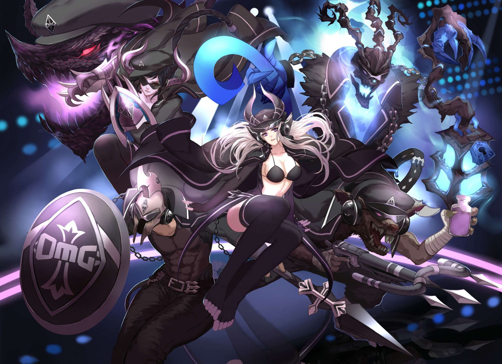

What is League of SoftUni Legends?

Welcome! Here you'll find all the basic information you need to get your system set up and hit the Fields of Code Justice.
League of SoftUni Legends is a, competitive platform for Coders.
Few teams of powerful champions, each with a unique design and playstyle, battle head-to-head across mul
tiple high-tech battlefields.